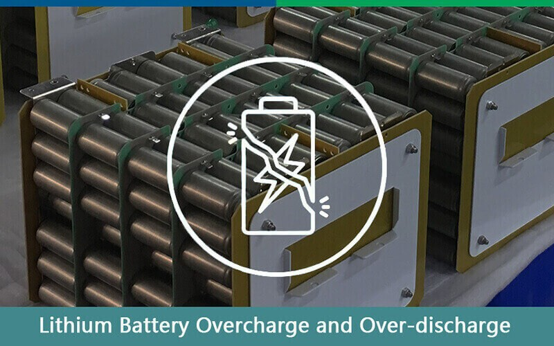
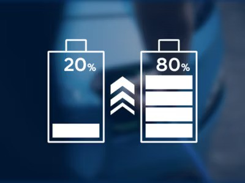
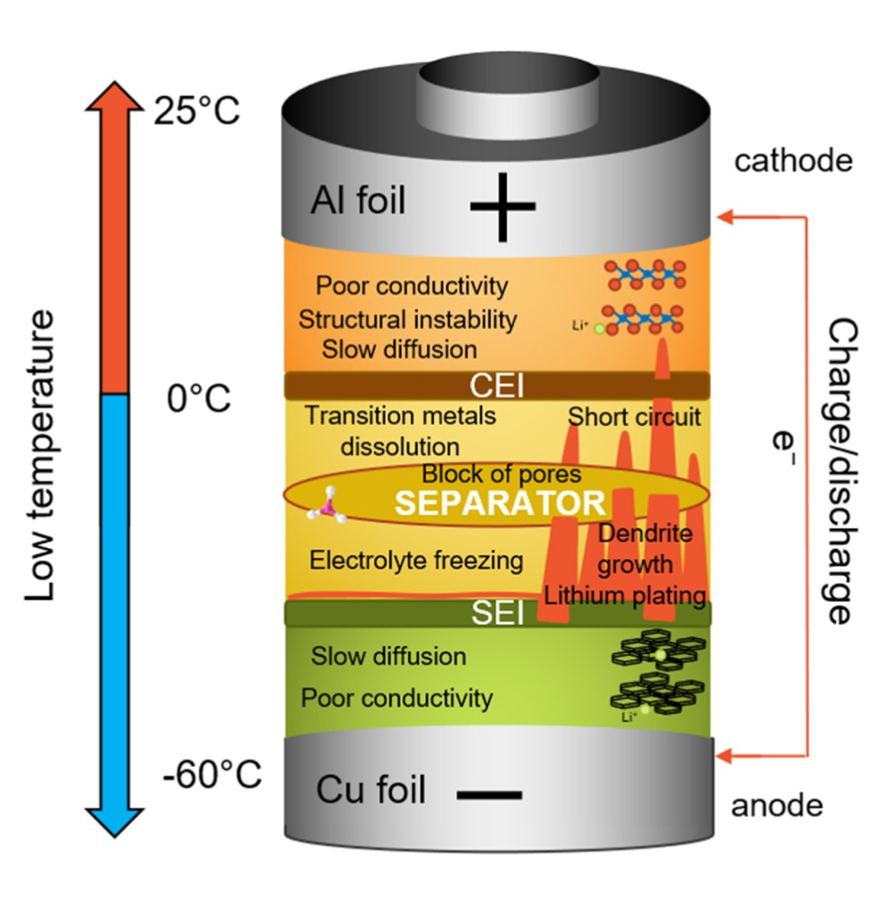

Lithium-ion batteries have become an integral part of our daily lives, powering everything from smartphones to electric vehicles. However, despite their widespread use, many misconceptions persist regarding their care and maintenance. This article aims to debunk common myths surrounding lithium batteries and provide factual, data-driven insights into their charging and storage practices.
Understanding Lithium-ion Battery Technology
Before diving into the myths, it’s essential to understand how lithium-ion batteries work. These batteries consist of an anode (usually made of graphite), a cathode (often composed of lithium metal oxides), and an electrolyte that facilitates the movement of lithium ions between the electrodes during charging and discharging. This design allows for high energy density, meaning they can store more energy in a smaller space compared to older battery technologies.
The Myth of Extended Initial Charging
One prevalent myth is that new lithium-ion batteries require multiple 12-hour charge cycles to "activate" them. This misconception stems from older battery technologies like nickel-cadmium (NiCd) and nickel-metal hydride (NiMH), which did indeed require such conditioning cycles to achieve optimal performance. However, lithium-ion batteries do not require this extended initial charging period.
According to a study published in the @Journal of Power Sources, modern lithium-ion batteries are designed to be used straight out of the box. They come pre-charged from the manufacturer and can be used immediately without any special initial charging procedures. In fact, subjecting lithium batteries to prolonged charging can lead to overcharging, which poses risks including reduced capacity and potential safety hazards.
Overcharging and Over-Discharging Risks
Another common myth is that overcharging a lithium-ion battery is harmless. In reality, excessively charging or discharging these batteries can lead to significant damage. Overcharging can cause the electrolyte to break down, leading to gas generation and potentially resulting in battery swelling or rupture.

Research from the Battery Univerity indicates that consistently charging a lithium-ion battery above its maximum voltage (typically 4.2V) can reduce its lifespan significantly. For example, a battery subjected to overcharging can lose up to 20% of its capacity after just a few hundred cycles compared to one charged correctly. Similarly, deep discharges—where the battery is drained below its recommended voltage—can also lead to irreversible damage.
Proper Charging Practices
To ensure the longevity and performance of your lithium-ion batteries, it’s crucial to adopt proper charging practices:
- Regular Charging
For daily use, charge your lithium batteries as needed to maintain a reasonable state of charge (SOC). Keeping the battery between 20% and 80% SOC is generally recommended for optimal health. Avoid letting your battery drop below 20%, as frequent deep discharges can accelerate degradation.

- Smart Charging Technology
Many modern devices incorporate smart charging technology that automatically stops charging when the battery reaches full capacity. Utilizing this feature can help prevent overcharging and extend battery life.
Storage Guidelines for Lithium Batteries
If you need to store a lithium-ion battery for an extended period—such as during seasonal changes or when not in use—there are specific guidelines you should follow:
- Ideal Storage Charge Level
When storing a battery long-term, it’s best to charge it to about 40% SOC. This level helps prevent excessive self-discharge while minimizing stress on the battery's chemistry. Storing a fully charged or completely empty battery can lead to capacity loss over time.
- Temperature Considerations
Temperature plays a significant role in battery health. Lithium-ion batteries should be stored in a cool, dry environment—ideally between 15°C (59°F) and 25°C (77°F). High temperatures can accelerate degradation by increasing the rate of chemical reactions within the battery, while extremely low temperatures can lead to reduced performance.

- Avoiding Deep Discharges
While occasional deep discharges may not be harmful, frequent occurrences can lead to accelerated degradation. Most manufacturers recommend avoiding discharging lithium-ion batteries below 20%. Doing so can result in irreversible damage and reduced cycle life.
Conclusion: Best Practices for Lithium Battery Care
By following these guidelines and debunking common misconceptions surrounding lithium-ion batteries, you can significantly enhance their performance and longevity. Proper charging and storage practices are essential for maintaining battery health and safety.
- Charge Regularly: Maintain SOC between 20% and 80%.
- Avoid Overcharging: Utilize smart charging features when available.
- Store Correctly: Keep batteries at around 40% SOC in cool environments.
- Limit Deep Discharges: Avoid draining your battery below 20% frequently.
- Understand Charging Methods: Familiarize yourself with CCCV charging techniques for optimal results.
By adhering to these practices, you will not only maximize your lithium-ion batteries' lifespan but also ensure they perform reliably when you need them most.